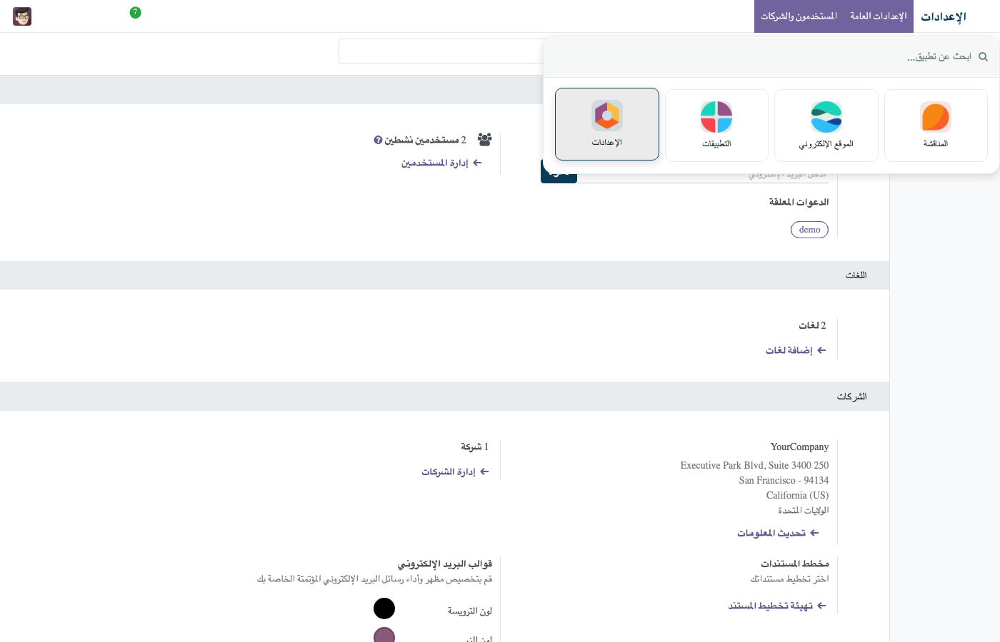

<meta charset="utf-8"/>
<section dir="rtl" style="max-width: 900px; margin: 0 auto; font-family: -apple-system, 'Segoe UI', Tahoma, Arial, sans-serif; color: #333; background: #ffffff; text-align: right;">

    <div style="text-align:center; padding: 32px 0;">
        <h1 style="font-size: 2rem; margin-bottom: 8px; color: #222;">ثيم عربي RTL متوافق مع معايير الحكومة الرقمية السعودية</h1>
        <p style="font-size: 1.15rem; color: #555; direction: rtl;">
            واجهة خلفية بمشغل تطبيقات على شكل بطاقات ديناميكية احترافية، بوابة عملاء وموقع
            إلكتروني بنفس الهوية، خطوط عربية (IBM Plex Sans Arabic) مطابقة لتوجيهات
            نظام التصميم السعودي، ودعم وصولية WCAG 2.1 AA &mdash; كل هذا داخل أودو مباشرة.
        </p>
        <p style="font-size: 1rem; color: #888; direction: ltr; margin-top: 4px;">
            DGA-Ready Theme &mdash; Arabic RTL for Government &amp; Enterprise, backend + portal + website
        </p>
        <div>
            <span style="display:inline-block; background:#f7f5f9; border:1px solid #e5e0e3; border-radius:20px; padding:6px 16px; margin:4px; font-size:14px;">Odoo 18</span>
            <span style="display:inline-block; background:#046A38; color:#fff; border-radius:20px; padding:6px 18px; margin:4px; font-size:14px; font-weight:700;">€49</span>
            <span style="display:inline-block; background:#f7f5f9; border:1px solid #e5e0e3; border-radius:20px; padding:6px 16px; margin:4px; font-size:14px;">Community &amp; Enterprise</span>
            <span style="display:inline-block; background:#f7f5f9; border:1px solid #e5e0e3; border-radius:20px; padding:6px 16px; margin:4px; font-size:14px;">عربي / English + جميع اللغات</span>
        </div>
    </div>

    <div style="margin-bottom: 32px;">
        
        <p style="text-align:center; color:#888; font-size:0.85rem; margin-top:6px;">مشغل تطبيقات جديد بالكامل &mdash; بطاقات قابلة للبحث بدل القائمة المنسدلة الافتراضية</p>
    </div>

    <div style="background:#f7f5f9; border-radius: 12px; padding: 24px; margin-bottom: 32px;">
        <h2 style="margin-top:0;">لماذا هذا الثيم؟</h2>
        <p>
            تطبيقات أودو الافتراضية مبنية أولًا للإنجليزية، والعربية تُضاف كترجمة فقط -
            الخطوط لا تطابق توجيهات الهوية الرقمية السعودية، وتجربة المستخدم لا تراعي
            معايير الوصولية التي تتوقعها الجهات الحكومية. هذا الثيم يعيد بناء الطبقة
            البصرية بالكامل: خطوط عربية حقيقية (IBM Plex Sans Arabic) بدل الخط الافتراضي،
            ألوان قابلة للتخصيص من الإعدادات مباشرة (بدون إعادة بناء أو برمجة)، مشغل
            تطبيقات جديد كليًا يعرض التطبيقات كبطاقات بدل قائمة نصية، ورابط "تخطي إلى
            المحتوى" وأداة تكبير الخط في البوابة والموقع، تمامًا كما هو معتاد في
            المنصات الحكومية الرقمية.
        </p>
    </div>

    <h2>أبرز المزايا</h2>
    <table style="width:100%; border-collapse: collapse; margin-bottom: 24px;">
        <tr><td style="padding:10px; border-bottom:1px solid #eee; width:220px;"><strong>مشغل تطبيقات بالبطاقات</strong></td>
            <td style="padding:10px; border-bottom:1px solid #eee;">يستبدل قائمة التطبيقات النصية بشبكة بطاقات قابلة للبحث ولوحة المفاتيح، تعمل بالكامل على Community دون الحاجة لإنتربرايز.</td></tr>
        <tr><td style="padding:10px; border-bottom:1px solid #eee;"><strong>خطوط عربية أصلية</strong></td>
            <td style="padding:10px; border-bottom:1px solid #eee;">IBM Plex Sans Arabic للنصوص العربية، IBM Plex Sans للإنجليزية، مطبّقة حسب اللغة فلا تتأثر بقية اللغات المثبتة.</td></tr>
        <tr><td style="padding:10px; border-bottom:1px solid #eee;"><strong>معاينة حية في الإعدادات</strong></td>
            <td style="padding:10px; border-bottom:1px solid #eee;">شاشة إعدادات كاملة (Settings &gt; DGA Theme) ببطاقة معاينة حية، 4 أزواج خطوط عربية/إنجليزية للاختيار، وألوان منفصلة للعناوين والنصوص - كل هذا تحكم فيه قبل الحفظ.</td></tr>
        <tr><td style="padding:10px; border-bottom:1px solid #eee;"><strong>ألوان قابلة للتخصيص فورًا</strong></td>
            <td style="padding:10px; border-bottom:1px solid #eee;">لوحة ألوان احترافية مطابقة للتباين البصري (WCAG AA) كنقطة بداية، مع منتقي ألوان من الإعدادات يطبَّق فورًا دون إعادة تركيب.</td></tr>
        <tr><td style="padding:10px; border-bottom:1px solid #eee;"><strong>دعم كامل لـ RTL</strong></td>
            <td style="padding:10px; border-bottom:1px solid #eee;">يعتمد على محرك rtlcss المدمج في أودو، فتنعكس كل الشاشات تلقائيًا للعربية دون كسر الإنجليزية أو أي لغة أخرى.</td></tr>
        <tr><td style="padding:10px; border-bottom:1px solid #eee;"><strong>طبقة وصولية (Accessibility)</strong></td>
            <td style="padding:10px; border-bottom:1px solid #eee;">حلقات تركيز واضحة، رابط "تخطي إلى المحتوى"، وأداة تكبير/تصغير الخط في البوابة والموقع.</td></tr>
        <tr><td style="padding:10px;"><strong>بوابة عملاء وموقع بنفس الهوية</strong></td>
            <td style="padding:10px;">صفحات "حسابي" والمستندات والدردشة، وباقة موقع/متجر إلكتروني منفصلة (sa_dga_theme_website) تُثبَّت تلقائيًا عند وجود الموقع.</td></tr>
    </table>

    <div style="margin-bottom: 24px;">
        
        <p style="text-align:center; color:#888; font-size:0.85rem; margin-top:6px;">منتقي ألوان من الإعدادات &mdash; يُطبَّق فورًا على الواجهة بأكملها</p>
    </div>

    <div style="margin-bottom: 32px;">
        
        <p style="text-align:center; color:#888; font-size:0.85rem; margin-top:6px;">بوابة العملاء (حسابي) بالعربية RTL بنفس هوية الثيم</p>
    </div>

    <div style="background:#f7f5f9; border-radius: 12px; padding: 24px; margin-bottom: 24px;">
        <h2 style="margin-top:0;">إخلاء مسؤولية صريح</h2>
        <p>
            الألوان المعتمدة افتراضيًا مستوحاة من الهوية الوطنية السعودية ومطابقة
            لمعايير التباين البصري (WCAG AA)، وليست استخراجًا حرفيًا من دليل الهوية
            البصرية الداخلي المقيّد لهيئة الحكومة الرقمية. الثيم لا يدّعي اعتمادًا
            رسميًا من الهيئة &mdash; كل الألوان قابلة للتغيير بالكامل من الإعدادات لمن
            يملك الدليل الرسمي.
        </p>
    </div>

    <h2>خطوات الإعداد</h2>
    <ol>
        <li>ثبّت التطبيق &mdash; يُطبَّق الثيم فورًا على الواجهة الخلفية والبوابة.</li>
        <li>اختر لونًا جاهزًا أو خصص لونك من الإعدادات &gt; DGA Theme.</li>
        <li>عند تثبيت تطبيق الموقع الإلكتروني، ثبّت الباقة المكمّلة sa_dga_theme_website لتطبيق نفس الهوية على الموقع والمتجر.</li>
    </ol>

    <div style="text-align:center; padding: 24px 0 8px; border-top: 1px solid #eee; margin-top: 8px;" dir="ltr">
        
    </div>

</section>
